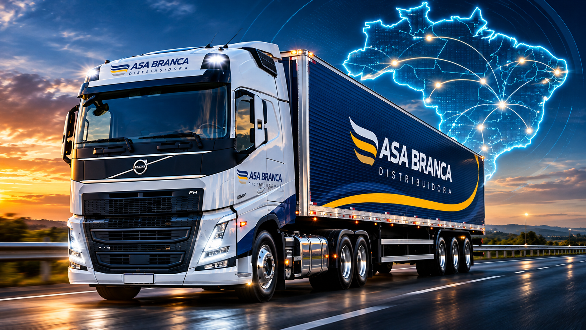

Varejo alimentar
Portfólio para o comércio alimentar, com produtos e marcas voltados à operação diária do varejo.
Ver marcas e linhas ↗Desde 1996, a Asa Branca conecta indústrias, marcas e negócios por meio da distribuição e de relações comerciais de longo prazo.
Fundada em Arapiraca (AL), a empresa ampliou sua atuação e hoje atende o varejo alimentar, o food service e o segmento de farmácias em Alagoas e Sergipe.
Qualidade dos produtos, atendimento e eficiência logística orientam as operações e o relacionamento com parceiros e clientes.

*Indicador divulgado na página institucional da empresa. Os números operacionais podem ser atualizados pela Asa Branca.
Um mix diversificado, atendimento comercial especializado e operações focadas em clientes dos dois estados.
Portfólio para o comércio alimentar, com produtos e marcas voltados à operação diária do varejo.
Ver marcas e linhas ↗Cortes avícolas, bovinos e suínos, laticínios, pescados congelados, embutidos e outras categorias para operações alimentícias.
Conhecer portfólio ↗Distribuição para o segmento de farmácias, com atendimento comercial dedicado e marcas específicas por unidade.
Ver operações farma ↗Estrutura física e frota próprias apoiam a distribuição em Alagoas e Sergipe. Os dados abaixo foram publicados no site institucional da Asa Branca.
Os números refletem as informações da página institucional consultada, não medições em tempo real.
Fundação da Asa Branca em Arapiraca, Alagoas.
Abertura da filial em Nossa Senhora do Socorro, Sergipe.
Início das operações de venda de medicamentos.
Oferecer produtos de qualidade com integridade, excelência e transparência, promovendo inovação e cuidado social.
Ser referência em importação e distribuição no Nordeste, crescendo junto a parceiros, clientes e colaboradores.
Integridade, excelência e transparência no atendimento, nas operações e nas relações comerciais.
Contatos dos gestores divulgados pela Asa Branca. Escolha o estado para consultar os responsáveis por distribuição, frios, food service e farma.
Endereços e canais de atendimento apresentados no portal oficial.
Avenida Asa Branca, 342 – Distrito Industrial
Bairro Guaribas, CEP 57303-750
Arapiraca – AL
Rodovia Manoel do Prado Franco, S/N
Bairro Taiçoca, CEP 49160-000
Nossa Senhora do Socorro – SE
Central de atendimento: 0800 284 1570 · Ouvidoria: ouvidoria@asabranca.ind.br